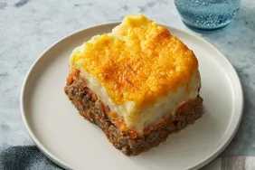

Home
Sheperd's Pie

Description
Shepherd's pie is the ultimate all-in-one dish. It's got everything you could ask for in a meal: hearty meat, starchy potatoes, colorful veggies, and gooey cheese.
Ingredients
- Ground Lamb
- Potatoes
- Carrots
- Onions
- Peas
- Cheese
- Flour
- Beef Broth
- Ketchup
Steps
- Boil potatoes until tender than mash them.
- Cook the vegetables.
- Cook the ground lamb.
- Add flour, ketchup, and broth to the lamb and simmer for 5 minutes.
- In a casserole dish, add your lamb, vegetables, mashed potatoes in that order. Finally, add your cheese.
- Bake in the oven until golden brown.